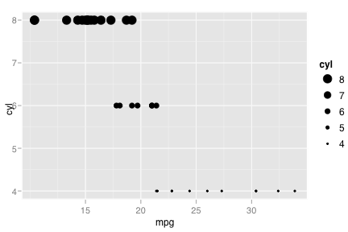
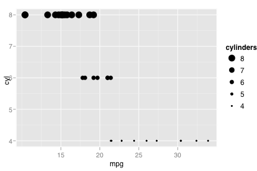
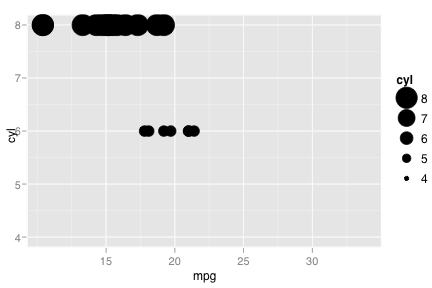
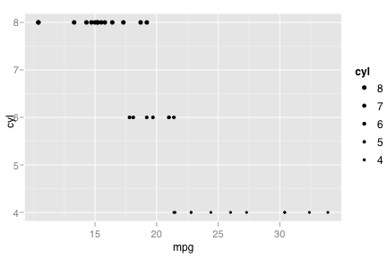
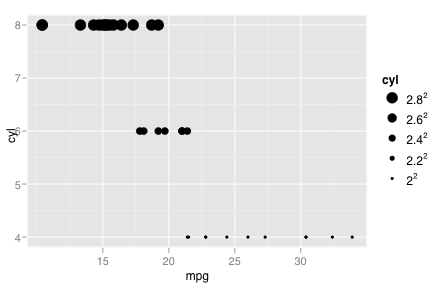
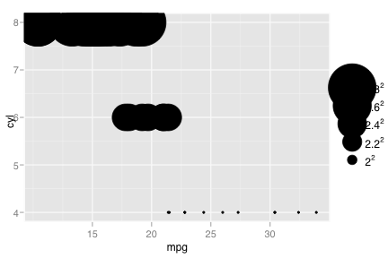
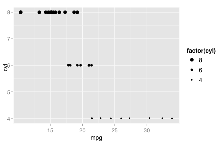
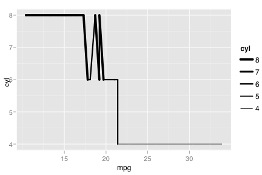

scale_size
Size scale for continuous variable
Details
See also
Examples
> (p <- qplot(mpg, cyl, data=mtcars, size=cyl))  > p + scale_size("cylinders")  > p + scale_size("number\nof\ncylinders")> > p + scale_size(to = c(0, 10))  > p + scale_size(to = c(1, 2))  > > # Map area, instead of width/radius > # Perceptually, this is a little better > p + scale for continuous variable'>scale_area()  > p + scale for continuous variable'>scale_area(to = c(1, 25))  > > # Also works with factors, but not a terribly good > # idea, unless your factor is ordered, as in this example > qplot(mpg, cyl, data=mtcars, size=factor(cyl))  > > # For lines, you need to tell that you want lines on the legend > (p <- qplot(mpg, cyl, data=mtcars, size=cyl, geom="line")) > p + scale_size(guide="line") 